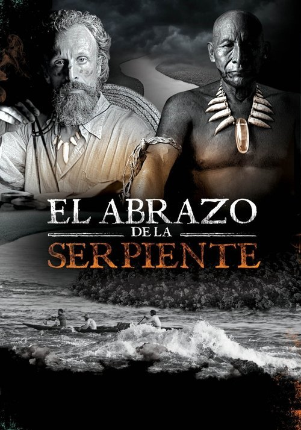

El abrazo de la serpiente (2015)
Sinopsis Rápida
En lo profundo de la Amazonia, un encuentro entre un chamán anciano y un etnobotánico desata un viaje alucinante a través del tiempo, donde la memoria, la traición y la búsqueda de una planta sagrada se entrelazan en un drama inolvidable.
Sinopsis Detallada
El abrazo de la serpiente es una experiencia cinematográfica cautivadora que trasciende la narrativa lineal. Sigue a Karamakate, un chamán indígena, en su encuentro con dos etnobotánicos a lo largo de décadas, en busca de una planta legendaria con poderes curativos. La película es una exploración poética y visualmente deslumbrante de la colonización, la destrucción cultural y la memoria ancestral, donde el pasado, presente y futuro se fusionan en un laberinto de recuerdos y revelaciones. La relación entre Karamakate y los exploradores es compleja y llena de matices, presentando una mirada crítica sobre la relación entre el mundo occidental y las culturas indígenas. Su belleza visual, la profunda exploración del trauma y la pérdida, combinada con una trama conmovedora, la convierten en una película imprescindible.
¿Por qué tenés que verla?
- Una poderosa exploración del colonialismo y su impacto en las culturas indígenas.
- La impresionante dirección de Ciro Guerra, que crea una atmósfera visualmente impactante y poética.
- Su reconocimiento internacional y su impacto en la representación del cine latinoamericano.
- Una narración no lineal que enriquece la experiencia narrativa.
Idea Extra
Análisis del simbolismo indígena en la película: Descifrando la iconografía y los significados ocultos en la obra maestra de Ciro Guerra.